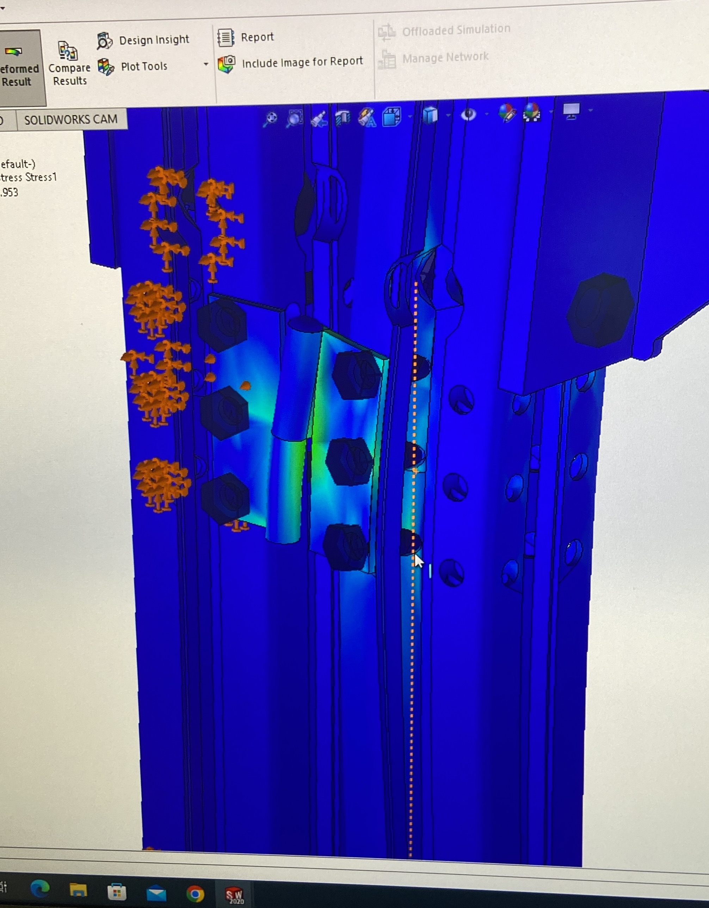
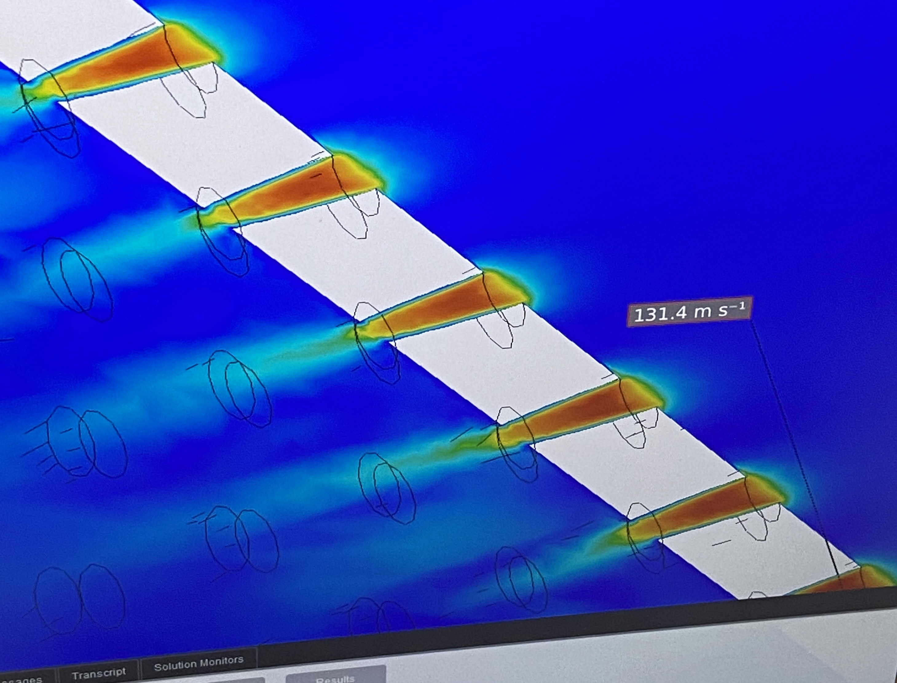
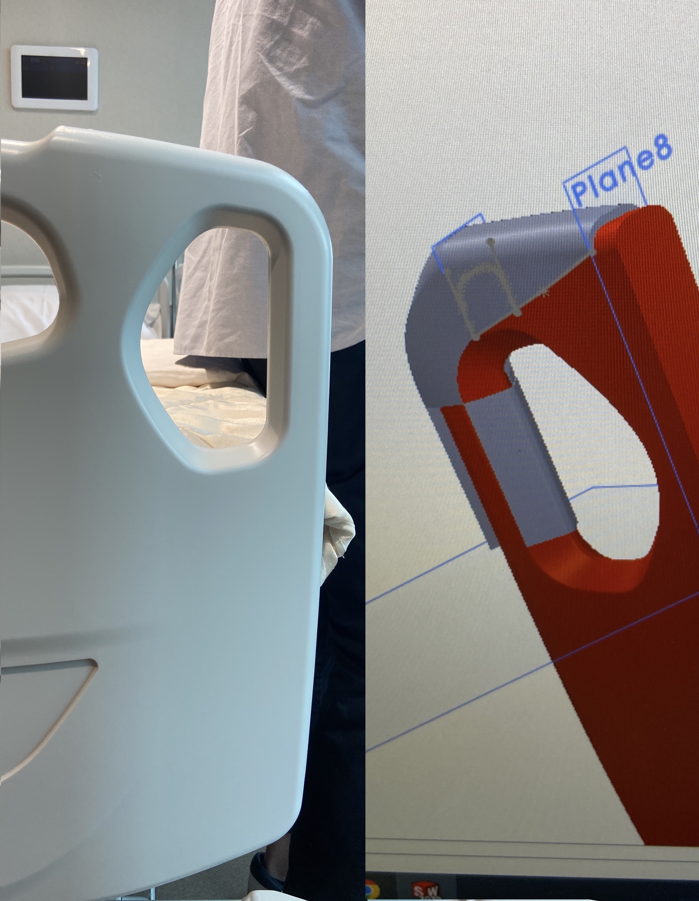
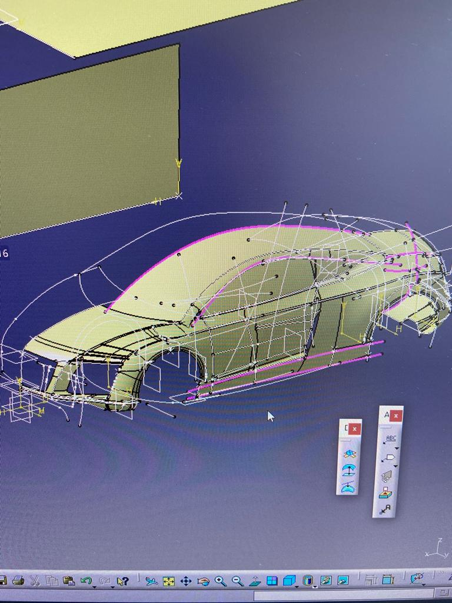
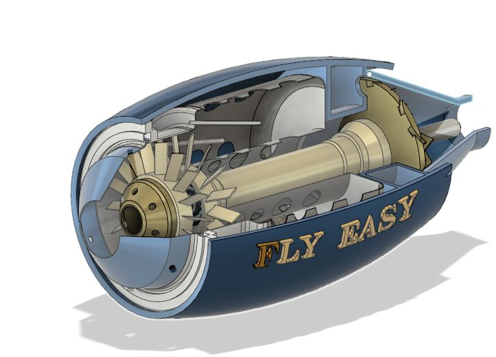

- Designed, coded and tested a robot capable of following a specified black path.
- The robot uses IR sensors as input values to determine the speed of the right and left wheel motors.
Vojin Lukic
Mechanical Engineering @ City University of Hong Kong
About me
An engineering student with a profound interest in mechanical and aerospace engineering. Due to real life experience in the field of programming, as well as project work including CAD modelling software and mechanical manufacture processing - I hope to be able to find new ways to combine my technical and theoretical knowledge in industry.
My Skills
3D Modelling
Programming Languages
Manufacturing Capabilities
My Experience


- Coded a program that controls the heating of oil to a specified temperature.
- Thermocouples send signal to DAQ, over to computer software, back to SSR for definiting heating duty cycle.

- Personally constructed the rig, that will be utilized by the lab.
- The rig can run multiple tests at once.

- Different optimization algorithms to achieve highest energy to mass ratio of the blades.
- Solving delicate issues with material selection and 3d printing very thin blade edges.

- Efficiently ran simulation on the prototype of the advertisment robot - visualized the performance of the structure under predetermined load.
- Checked for failure under the given load, deformation, displacement and stress values.

- Ran a fluid flow simulation - the performance of an outdoor simulation system.
- Visualization of results - streamlines, contour plots and vectors of velocity, pressure, temperature etc.

- Brainstormed and modelled the initial concept for the mount for a security device in hospitals.
- Performed "reverse engineering" - with the goal of 3d printing the aforementioned early design.

- Effectively grasped the CATIA V5 software, enabling efficient handling of Part, Assembly, Generative Shape Design and Drafting workbenches.
- CATIA V5 is a sofware used by many reputable companies such as: BMW, Porsche, Audi, Volkswagen, Bentley Motors Limited, Volvo, Fiat etc.

- Designed and animated Hybl Turbines H16 Jet engine with Autodesk Fusion360 software.
- Perfected the understanding of Autodesk Fusion360 - and how it relates to 3D PRINTING.
- Effectively examined the procedures on the milling machine (up-cut, down-cut, drill etc.).
- Explored different sorts of the cutter, as well as for which operations they are used and machined a simple workpiece.
- Effectively examined the procedures on the Lathe (facing, taper turning, boring etc.).
- Machined the part shown in the picture.
Programming Languages
- Python
- C/C++
- C#
- Prolog
- HTML
- PHP
- CSS
- SQL
- MATLAB
Contact Me
Hong Kong SAR
Serbian Phone: (+381)637674564 / Hong Kong Phone: (+852)59399840
Email: vojin.lukic@gmail.com